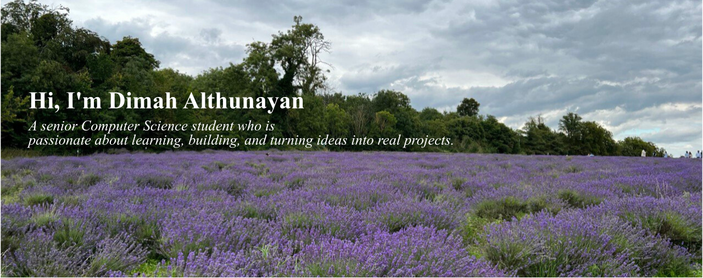

About Me
I am a senior Computer Science student I am especially interested in applying
currently nearing the completion of my theoretical concepts through
undergraduate studies.Throughout my academic and personal projects, as I
academic journey, I have explored a wide believe practical experience is an
range of topics within computer science, essential part of learning.
which helped me build a strong foundation
in problem-solving and analytical thinking. This website serves as a space to
showcase my academic work, projects,
Over time, I developed a particular interest and progress as a Computer Science
in artificial intelligence and machine student, as well as to document my
learning, where I enjoy understanding how learning journey as I continue to grow
data and algorithms can be used to solve and develop my technical skills.
complex problems.

Areas of Interest
- AI/Machine Learning
- Exploring intelligent systems and data-driven models through academic coursework and projects.
- Cybersecurity Fundamentals
- Developing an understanding of core cybersecurity concepts, including system security and data protection.
- Data Analysis and Visualization
- Working with data to extract insights and present information using analytical and visualization techniques.
My Portfolio
A selection of academic and personal projects demonstrating my skills and interests.